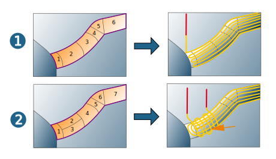
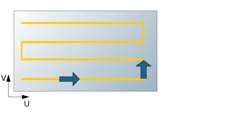
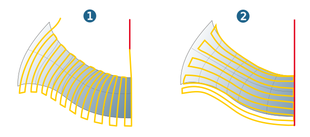
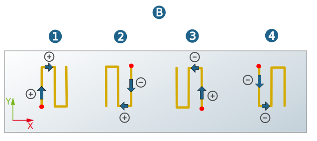
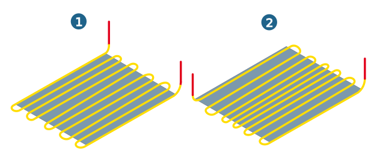
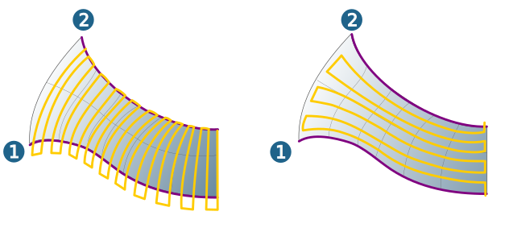

Strategy
Strategy
Iso orientation: The milling paths follow the course of the ISO lines (U, V) of the selected surfaces. Each of the selected surfaces will be machined individually.
Global orientation: The milling paths run crossways or parallel to the longest boundary curve of the selected surfaces. The selected surfaces should not have more than two adjacent surfaces. Adjacent here also includes contact via a common boundary curve, but not contact via isolated points.
Example:
(1) All selected surfaces have a maximum of two adjacent faces and are suitable for machining. The resulting milling paths are optimal.
(2) The surfaces 1 to 4 have three adjacent faces each and are not suitable for machining. The resulting milling paths are not optimal.
|  |
Note
Iso machining is particularly suitable for surfaces that are arranged in a chain or circular manner.
Surfaces: Multiple selections are possible for both strategies. The order in which you select surfaces is not relevant for the Global orientation strategy.
Machining direction
U parameter / V parameter: Define the machining direction and infeed direction. Available for the Iso orientation strategy.
|  |
In the default setting, the first milling path runs in the positive direction of the selected Iso parameter and the first infeed movement to the next milling path is executed in the positive direction of the other Iso parameter.
Crossway / Flow: Define the machining direction and infeed direction. Available for the Global orientation strategy. The machining direction is either crossway (1) or flow (2), that is, parallel to the longest boundary curve of the selected surfaces.
|  |
Infeed mode
Define the direction of the horizontal stepover between the end point of the one milling path and the start point of the following milling path. The direction of the first milling path and the infeed direction between the individual milling paths are defined by the selected ISO line.
Zigzag direct (1), Zigzag smooth (2): Machining with changing cutting mode.
 |
Parallel (3), Diagonal (4): The direction of all milling paths is the same. The direction is defined by the direction of the ISO line.
 |
If the Prefer spiral option is enabled, machining takes place in a continuous toolpath with a spiral-shaped vertical stepdown.
Reverse direction
The following graphic illustrates the effect of the changes in direction on the position and direction of the first milling path in the Zigzag direct mode.
A) U Parameter, B) V Parameter
1) Without reversal, 2) Milling path, 3) Horizontal Stepover, 4) Both directions reversed
 |
|  |
Grouping toolpaths
Available only for the ISO orientation strategy.
Uniform (1): The paths are distributed uniformly (path distances are the same across the entire face).
Symmetric (2): The paths are divided symmetrically from the center of the face to be machined (path distances are not the same across the entire surface).
|  |
Start profile/End profile
Available only for the Global orientation strategy. Define the start (1) and end (2) of the machining using two profiles.
|  |